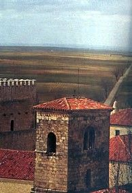
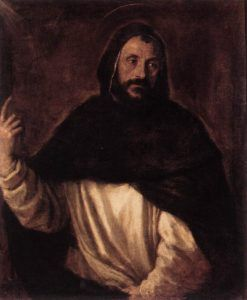
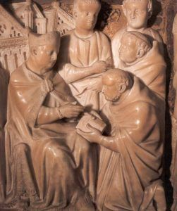

St Domonic was also called Domingo Felix de Guzman or Dominic of Osma or Caleruega. He was a Catholic priest and founder of the Dominican Order.
He was born on August 8, 1170 in Caleruega, Castile, Spain and died on August 6, 1221 at the age of 50 in Bologna, Emilia-Romagan, Italy.
His feast day is celebrated on August 8 every year in the CAtholic Church.